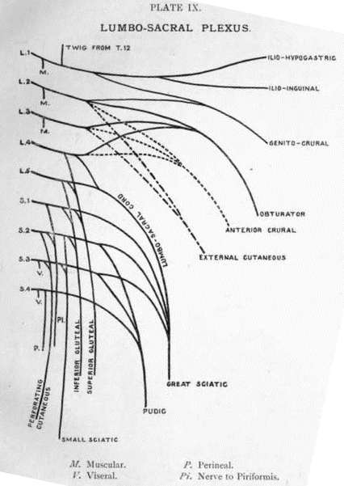

Sacral Plexus
Description
This section is from the book "Nerves Of The Human Body", by Charles R. Whittaker. Also available from Amazon: Hughes Nerves Of The Human Body.
Sacral Plexus
The sacral plexus occupies the posterior wall of the pelvic cavity, lying on the anterior surface of the piriformis muscle and behind the pelvic fascia. It is formed by the union of the lumbo-sacral cord from the fourth and fifth lumbar nerves, together with the anterior primary divisions of the first three, and part of the fourth, sacral nerves. The lumbo-sacral cord descends behind the common iliac vessels, and in front of the sacro-iliac joint. The sacral nerves issue from the anterior sacral foramina between the slips of origin of the piriformis.
The plexus usually consists of two bands, an upper large band, the sciatic, triangular in outline with the apex at the great sacro-sciatic foramen, and a lower smaller band, the pudic (pudendal). The former becomes the great sciatic nerve; the latter, the internal pudic (pudendal). The branches of the plexus are muscular, visceral, cutaneous, great sciatic, superior and inferior glutaeal, and internal pudic.
Branches
(a) Muscular
(1) Twigs to piriformis from first and second sacrals.
(2) Nerve to obturator interuns (L. 5, S. 1, 2) leaves the pelvis through the great sacro-sciatic foramen, furnishes a twig to the superior gemellus on reaching the buttock, and disappears through the small sacro-sciatic foramen to terminate in the obturator internus.
(3) Nerve to quadratus femoris (L. I, 5, S. 1) emerges from the pelvis in a similar manner to that of the preceding nerve. In addition to the quadratus femoris, it supplies the inferior gemellus and also the hip-joint.
(b) Visceral, arise from the third and fourth sacral. They are distributed to the pelvic viscera.
(c) Cutaneous
(1) Small sciatic (posterior cutaneous nerve of thigh) (S. 2, 3), passes between the piriformis and coccy-geus to leave the pelvis via the great sacro-sciatic foramen. Descending under cover of the great sciatic it reaches the thigh at the lower border of the glutaeus maximus It supplies the skin of the back of the thigh, and of the back of the calf for a short distance (Plate XII.), while glutaeal branches innervate the skin of the lower half of the buttock. The small sciatic gives off a distinct branch, the long pudendal, at the lower edge of the glutaeus maximus. This branch curves medially over the origin of the hamstring muscles, and becomes cutaneous near the pubic arch. It is distributed to the skin of the scrotum, root of the penis, anus, and the upper part of the medial aspect of the thigh. The long pudendal communicates with the superficial perineals, inferior haemorrhoidal, and ilio-inguinal nerves. (2) Perforating cutaneous (S. 2, 3), pierces the great sacro-sciatic ligament along with the coccygeal branch of the sciatic (inferior glutaeal) artery to become cutaneous near the coccyx. It innervates the skin over the lower and medial part of the nates.
(d) Superior glutaeal (L. 4, 5, S. 1). Accompanies the gluteal vessels through the great sacro-sciatic foramen, lying above the piriformis. On reaching the buttock it immediately divides into two, a superior and an inferior. Both branches are directed forwards between the gluteus minimus and medius, the former supplying the gluteus medius, and, the latter the glutaeus minimus, glutaeus medius, and the tensor fasciae femoris.
(e) Inferior glutceal (L. 5, S. 1, 2). Emerges from the pelvis at the lower border of the piriformis. It innervates the gluteus maximus. (f) Great sciatic (L. 4, 5, S. 1, 2, 3). (g) Internal pudic (S. 2, 3, 4).
The lower part of the fourth sacral does not assist in the formation of the plexus. It sends muscular branches to the levator ani, coccygeus, and external sphincter ani, also a connecting filament to the anterior primary division of the fifth sacral. The latter nerve descends on the coccygeus, to supply that muscle together with the skin on the back of the coccyx. The anterior primary division of the coccygeal nerve passes through the sacro-sciatic ligaments and the coccygeus to join the fifth sacral. The name sacro-coccygeal plexus is applied to the union of the fourth and fifth sacral and the coccygeal nerves.
Internal Pudic
The internal pudic (pudendal) passes between the coccygeus and piriformis to leave the pelvis through the great sacro-sciatic foramen. It winds over the spine of the ischium on the medial side of the pudic vessels, and disappears through the lesser sacro-sciatic foramen, to reach the hinder end of the ischio-rectal fossa. Here it enters a membranous canal, Alcock's canal, on the lateral wall of the fossa In this it divides into three branches, inferior hemorrhoidal, perineal, and dorsal nerve of the penis or clitoris.
Branches
(a) Inferior hemorrhoidal, pierces the medial wall of Alcock's canal to cross the ischio-rectal fossa in a horizontal manner. It supplies the external sphincter muscle and the perineal skin. The anterior filaments communicate with the long pudendal and superficial perineal nerves.
(b) Perineal, runs forwards in Alcock's canal, lying below the internal pudic vessels, to divide into superficial and deep branches. The superficial branches are the lateral and medial superficial perineal nerves; they are prolonged forwards to the skin of the scrotum, or lateral labium pudendi. The deep branches supply the following muscles, sphincter ani externus, levator ani, transversus perinei, ischio-cavernosus and bulbo-cavernosus.
(c) Dorsal nerve of the penis or clitoris, pierces the triangular ligament accompanied by the internal pudic artery. It then passes between the two limbs of the suspensory ligament of the penis, to extend forwards along the dorsum of the penis or clitoris to terminate in the glans. Twigs are given off to the compressor urethrae muscle.
Great Sciatic
The great sciatic nerve is a thick bundle of nerve fibres which essentially consists of four separate elements. These are, from the medial to the lateral side, the nerve to the hamstrings, the internal popliteal (tibial), the external popliteal (common peroneal), and the nerve to the short head of the biceps. The nerve emerges from the pelvis through the great sacro-sciatic foramen, below and behind the piriformis, then proceeds downwards, resting successively upon the os innominatum, superior gemellus, obturator internus, inferior gemellus, quadratus femoris, and adductor magnus. At a point a little below the middle of the thigh, the main trunk separates into its terminal divisions, the internal and external popliteal nerves. Overlapping the great sciatic are the piriformis, sciatic artery, small sciatic nerve, and the gluteus maximus. In the thigh it is crossed superficially by the long head of the biceps. The nerve is accompanied by a branch of the sciatic (inferior gluteal) artery, called the comes nervi ischiadici.
The muscles supplied by the great sciatic are the semi-tendinosus, semi-membranosus, long head of the biceps, and part of the adductor magnus.
Continue to:
- prev: Lumbar Plexus
- Table of Contents
- next: Internal Popliteal